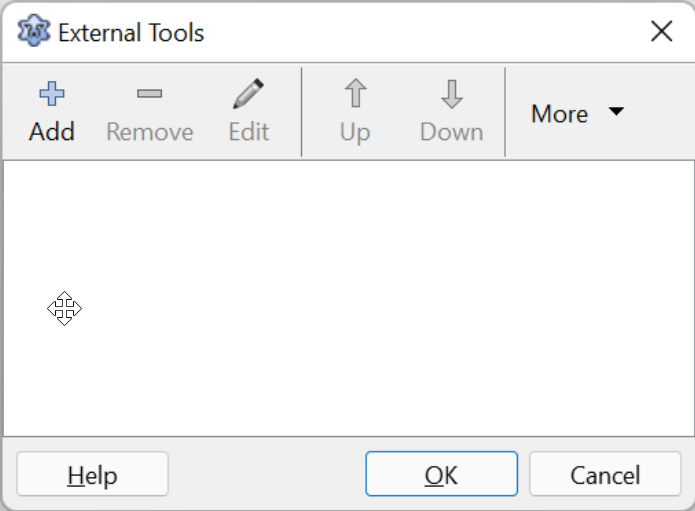
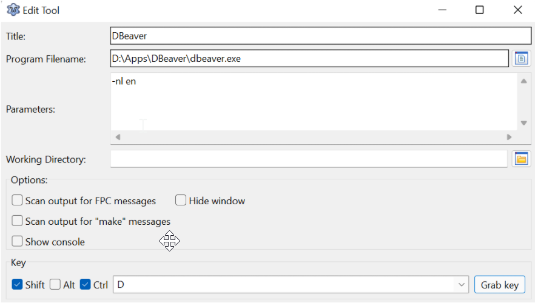
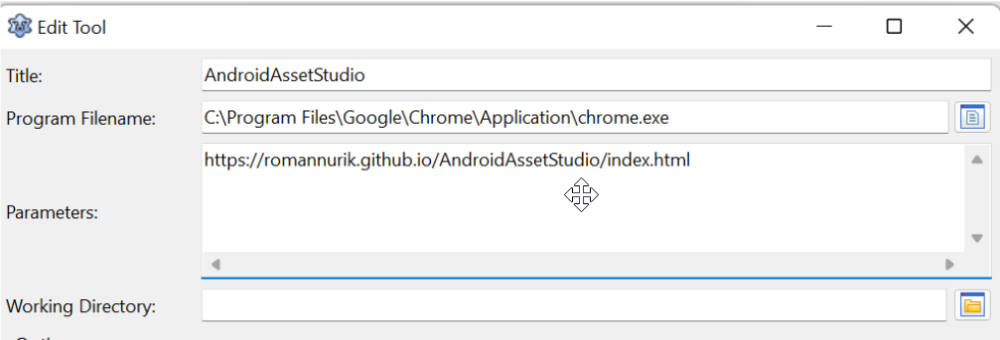
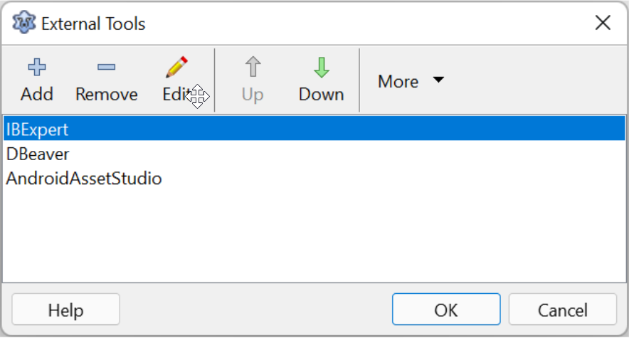

O menu Tools do Lazarus assim como no Delphi permite que acrescentemos ferramentas exteriores para que não precisemos ir até o gerenciador de arquivos ou menu do sistema para chamá-los. Para acrescentar programa vamos em Tools->Configure External Tools, daí então temos uma janela assim:

É muito inútil a lista vazia então vamos acrescentar algumas ferramentas, por exemplo, o DBeaver que é uma ferramenta bastante interessante para vasculhar e procurar informações em banco de dados, clique em Add e prossiga informando os campos essenciais:

As informações de “Program Filename” e “Parameters” você retira dos próprios atalhos que chamam os programas instalados. Com mais experiência notará que a opção Key mais embaixo serve para informarmos uma tecla de atalho global para chamar este programa diretamente, por exemplo, Ctrl+Shif+D para chamar imediatamente o programa DBEaver sem a necessidade de escolhê-lo no menu. Se tiver que acrescentar o mesmo programa, porém com parâmetros diferentes, use a opção de Clonar no botão “Mais”.
Você pode também incluir atalhos para as páginas na internet que você consome mais como forums, arts, gitbub, … Por exemplo, muitos programadores usam o site romannurik.github.io para obter/criar ícones para usar em seus programas e projetos, o segredo neste caso é usar o atalho para o navegador e o parâmetro para indicar o site que desejamos, veja o exemplo abaixo:

Faça isso para as páginas mais acessadas de sua plataforma de programação, ficando mais ou menos assim:

O exemplo acima foi para a plataforma Windows, mas a mesma técnica serve de forma semelhante para a plataforma Linux.
Quem usa Linux geralmente conhece sua plataforma, mas segue algumas dicas que são importantes para simplificar a localização de programas usando o terminal:
whereis firefox
whereis flamerobin
Mas o whereis não localiza programas instalados via snap ou flatpak, estes gerenciadores de programas usam seus próprios mecanismos, por exemplo, para localizar um programa instalado via flatpak usando o comando ‘flatpak list’:
flatpak list|grep VLC
ou se o programa já estiver em execução será mais fácil ainda:
flatpak ps
Então para rodar, precisamos apenas do nome flatpak dele e executá-lo assim:
Então poderá criar atalhos usando a forma como seu sistema está habituado a funcionar.
No ambiente Windows, considero imprescindível os seguintes programas no menu tools:
Também haverá outros programas. Considere usar uma tecla de atalho para os programas externos ou sites mais usados.